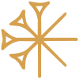

Computer vision for heritage collections
TiamaT is an iterative, human-in-the-loop workflow for analysing visual heritage corpora — designed for scholars and curators who want computational tools without needing to write a single line of Python.

What is TiamaT?
TiamaT — Toolkit for Integrated Annotation and Machine-learning Assisted Training — is a complete, modular pipeline that transforms raw, unstructured images into fully annotated, machine learning–ready datasets.
Rather than evaluating a model on a fixed test corpus, TiamaT integrates manual correction of predictions into a continuous cycle of training and evaluation. This approach keeps human expertise at the heart of computational processing — which is especially suited to heritage corpora, for which there is no ideal ground truth defined in advance.
Originally built for historical document analysis, it fits any project where annotations are built incrementally or interactively. The name is a nod to Tiamat, the Mesopotamian goddess of the ocean and chaos — an appropriate symbol for turning raw data into structured knowledge.
Draw and correct bounding boxes directly in Label Studio, with full control over your classification schema.
Automatic conversion and structuring of annotations into training-ready formats.
Train and run YOLO detection models on your corpus without writing a line of code.
Review predictions, correct errors, and feed them back into the training cycle, iteratively.
How it works
TiamaT follows a structured, iterative cycle. Each pass through the pipeline refines the model's predictions using your corrections as new ground truth. The process repeats until the results meet your scholarly standards.
You can also download annotated images, structured datasets, and performance metrics for publication or further analysis.
01
Import your corpus
Load your image collection — manuscripts, photographs, museum records — into TiamaT via the interface.
02
Annotate a sample
Draw bounding boxes around the visual elements you want to detect: miniatures, iconographic motifs, decorative elements…
↳ Label Studio
03
Evaluate your dataset
Before training, TiamaT provides a quality overview of your annotations: class distribution, ratio of annotated vs. unannotated images, and potential imbalances to address. This ensures your training data is ready.
04
Train the model
Configure key parameters — epochs, batch size, image size — and optionally fine-tune advanced settings. Start from scratch or build on an existing model, including one previously trained within TiamaT.
↳ YOLO
05
Run inference
Apply the trained model to new, unannotated images. TiamaT generates predictions automatically for each one.
↳ YOLO
06
Review & correct
Examine predictions in the annotation interface, correct errors, and validate results directly in Label Studio.
↳ Label Studio
07
Evaluate the model
Based on predictions and corrected annotations, TiamaT generates performance metrics — precision, recall, F1 score, and confusion matrix — to assess and document model quality.
08
Iterate
Corrected annotations are added to the training set. Repeat the cycle until the model's performance meets your research criteria.
Get started
TiamaT runs on macOS, Linux, and Windows. Follow the steps below for your system.
Make sure you have Python 3.10+, up to 3.12 installed. Python 3.13 is not yet supported due to a Label Studio compatibility issue. You can check by opening a terminal and running:
python --version
If Python is not installed, download it from python.org.
MacOS users if Python is not installed, we recommend using Homebrew
brew install python3
Clone the repository from GitHub:
git clone https://github.com/TiamaT-app/TiamaT_app.git cd TiamaT_app
git clone git@github.com:TiamaT-app/TiamaT_app.git cd TiamaT_app
python3 -m venv env source env/bin/activate pip install -r requirements.txt
python -m venv env env\Scripts\activate pip install -r requirements.txt
PyTorch must be installed separately depending on your hardware. Visit pytorch.org/get-started/locally and select your configuration to get the appropriate installation command.
source env/bin/activate python run.py
env\Scripts\activate python run.py
TiamaT will open in your browser at http://127.0.0.1:5001
Documentation
Understanding the key concepts and tools behind TiamaT will help you get the most out of the workflow. Each concept is paired with the tool that implements it within the application.
Object detection locates specific elements within an image and surrounds them with bounding boxes. Unlike image classification — which identifies the overall content of an image — object detection pinpoints multiple, distinct elements within a single image.
This makes it particularly suited to heritage collections, where a single document or photograph may contain several elements of interest: a heraldic motif, an annotation, a stamp, a decorative initial.
For digital humanities research, object detection enables two things: visual search across a corpus by specific features, and the automatic generation of structured metadata from image collections.
In supervised computer vision, an ontology defines the set of classes to annotate and their precise descriptions — ensuring the dataset addresses your research question consistently.
A solid ontology rests on three principles: transparency (precise definitions), transmissibility (clear enough for all annotators), and rigour (no room for interpretation or bias).
YOLO (You Only Look Once) is a state-of-the-art object detection model. In TiamaT, it locates visual elements in your images and draws bounding boxes around them.
You do not need to configure the model. TiamaT handles training, inference, and evaluation automatically from the annotations you provide.
Ultralytics documentation ↗Label Studio is the annotation interface used within TiamaT. It provides a visual environment for drawing bounding boxes, reviewing predictions, correcting errors, and validating results.
TiamaT manages the connection between Label Studio and YOLO automatically — you only interact with the labelling interface.
Label Studio documentation ↗Scientific resources
TiamaT : un workflow de computer vision entre iconographie médiévale et design contemporain
Revue Humanités Numériques — accepted 28 Nov. 2025
PosterTiamaT: A Reflexive and Iterative Protocol for Visual Analysis in Digital Humanities
Digital Humanities Conference 2026 — Daejeon, South Korea, 27–31 July 2026
TiamaT : un protocole itératif pour l'analyse visuelle en Humanités numériques
Atelier Digit_Hum 2025 — IA, Intelligences Augmentées pour les SHS, ENS Paris, 2 Oct. 2025. See the talk ↗
WorkshopDiscover TiamaT: A Practical Introduction
Digital Approaches to Pre-Modern Texts and Manuscripts — École nationale des chartes, Paris, 10–12 June 2025